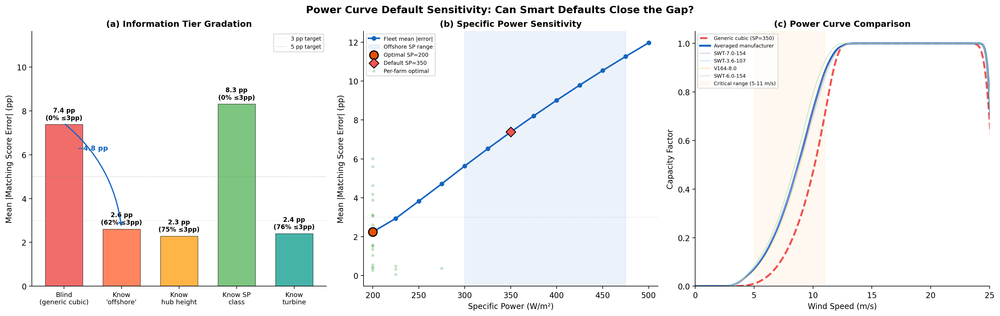
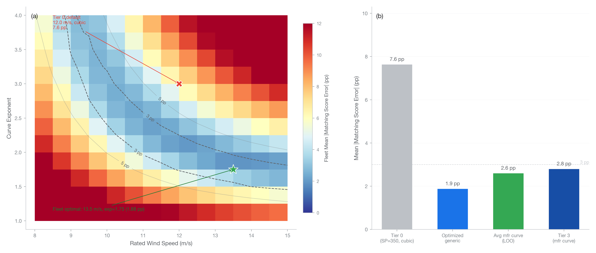

For flat (baseload) consumption profiles, hourly matching scores—the key metric for granular energy certificate markets—depend primarily on the cumulative distribution of generation values rather than on which specific hours are windy. This insight, validated across 27 UK wind farms (24 offshore, 3 onshore), a 134-turbine Chinese continental site, and a US Great Plains onshore farm, means that ERA5 reanalysis data can reconstruct accurate hourly generation profiles for certificate allocation even without metered data. With a manufacturer-specific power curve (Tier 3), shaped allocation achieves a mean matching score error of 2.8 [2.0–3.8] percentage points (pp, i.e., absolute difference in matching score expressed as a percentage; 95% bootstrap CI), with 70% of farms within ±3 pp and 87% within ±5 pp. An averaged manufacturer curve for the offshore sector (leave-one-out validated) achieves 2.6 [2.0–3.3] pp—closing ~96% of the gap between Tier 0 (7.4 pp) and the manufacturer curve (2.4 pp) without any turbine-specific knowledge. Results use flat (baseload) load profiles throughout; commercial, residential, and industrial profiles show qualitatively similar patterns.
Spatial and temporal robustness are surprisingly strong. Using wind data from 100 km away adds less than 0.5 pp error. Using a prior year’s wind data (with near-zero hourly correlation to the actual year) produces only 1–4 pp error, while naive multi-year hour-by-hour averaging produces 10 [8.7–11.0] pp error because it compresses the generation distribution. A preliminary test on the SDWPF Chinese continental dataset confirms that Tier 3 accuracy transfers cross-geography (±4.5 pp), though this single-site result does not establish generalization. The averaged curve also generalizes to an onshore farm (Hill of Towie) using a turbine model absent from the curve set, achieving 1.8 pp—demonstrating cross-turbine transferability. A fully blind test on a US Great Plains farm (turbine model unknown) achieves 5.8 pp with the averaged offshore curve—confirming that curve shape, not wind data quality, is the binding constraint.
Distribution-preserving averaging methods completely eliminate the naive averaging penalty: Weibull parameter averaging achieves 1.9 [1.1–2.8] pp with 3 years and 1.7 [1.2–2.2] pp with 10+ years—surpassing concurrent-year accuracy (2.3 pp). Duration curve averaging and quantile mapping achieve ~2.2 pp. Naive averaging worsens to 16 pp at 20 years, demonstrating that more data helps distribution-preserving methods and hurts time-domain methods. Monthly vs. annual production totals improve accuracy by ~0.4 pp. A two-parameter generic power curve—requiring no manufacturer data—can be optimized to 1.9 pp (rated wind speed = 13.5 m/s, exponent = 1.75) across a diverse 28-farm fleet, outperforming even the averaged manufacturer curve, because the sub-cubic exponent better approximates the generation distribution produced by real turbines. For practitioners: an optimized generic curve reduces allocation error from 7 pp to 2 pp with no turbine information at all, while knowing the exact location or year barely matters—because matching scores depend primarily on the shape of the generation distribution rather than on which hours are windy.
The transition toward 24/7 carbon-free energy (CFE) and granular energy certificates requires tracking not just how much renewable energy a generator produces, but when it produces it. The hourly matching score—defined as the fraction of load that can be covered by generation in each hour—has become a key metric for procurement and regulatory compliance. The EU Delegated Regulation 2023/1184 requires hourly temporal correlation for renewable hydrogen (RFNBO) additionality claims, with full hourly matching mandated from 2030 (European Commission 2023). More broadly, the Renewable Energy Directive III (European Parliament 2023) strengthens guarantees of origin, though it does not itself mandate hourly granularity for general certificates. The EnergyTag GC Scheme Standard V2 (2024) specifies hourly metered data as the primary basis for granular certificate issuance, with provisions for modeled data under defined conditions. Google’s 24/7 CFE methodology (Google 2021) introduced the hourly CFE% metric now adopted by corporate buyers worldwide, using settlement-quality metered data rather than modeled profiles. These frameworks create demand for hourly generation profiles but do not specify accuracy thresholds for modeled data—a gap this study addresses.
However, obtaining verified hourly generation profiles for individual wind farms presents a significant practical barrier. While total annual or monthly production is widely reported (e.g., through ENTSO-E, Elexon, or the EIA), hourly profiles are often proprietary, inconsistently formatted, or simply unavailable. This gap is particularly acute for:
No regulatory or market body has defined an explicit accuracy threshold for modeled hourly profiles. The ±3 pp and ±5 pp thresholds used throughout this paper are proposed by the authors as reasonable benchmarks, not compliance standards. We adopt ±3 pp as the primary benchmark for three reasons: (a) 3 pp on a typical 60% matching score represents ~5% relative error; (b) this is well within load-side measurement uncertainty and metering granularity effects; and (c) it is sufficient to distinguish meaningfully different generation profiles for procurement decisions. For context: at the Tier 3 level (manufacturer curve), 48% of farms achieve ±2 pp accuracy, 70% achieve ±3 pp, and 78% achieve ±4 pp—so the choice of threshold materially affects what fraction of farms “pass.” We also report ±5 pp as a secondary threshold.
Shaped allocation offers a solution: if you know a generator’s total production over a period and can model a plausible hourly shape, you can reconstruct the hourly profile by scaling the modeled shape to match the known total:
P_{\text{shaped}}(t) = P_{\text{model}}(t) \times \frac{\sum P_{\text{metered}}}{\sum P_{\text{model}}(t)}
This approach requires: 1. Weather data to drive a generation model (here, ERA5 reanalysis wind data) 2. A power curve to convert wind speeds to generation 3. A known total (annual, quarterly, or monthly) to calibrate the scale
The practical question is: How much information do you need to make this work?
We address seven questions through systematic sensitivity analysis:
This study provides the first systematic validation of ERA5 shaped allocation specifically for hourly matching score accuracy—the metric that matters for granular certificate markets. A substantial body of work has validated ERA5 for wind resource assessment: Olauson (2018) identified ERA5 as a step-change improvement over previous reanalyses for wind power modeling; Ramon et al. (2019) compared global reanalyses for near-surface wind representation; Staffell & Pfenninger (2016) demonstrated bias-corrected reanalysis techniques for simulating wind power output; Gualtieri (2022) assessed reanalysis reliability against tall tower measurements; Gruber et al. (2022) provided multi-country validation of wind power simulations from MERRA-2 and ERA5; Hayes et al. (2021) developed long-term offshore wind generation models; Davidson & Millstein (2022) documented limitations of reanalysis data for wind power applications; Peña-Sánchez et al. (2025) validated ERA5 wind speeds globally; and Gandoin & Garza (2024) identified systematic underestimation of strong offshore winds in ERA5. These studies focus on energy yield estimation, capacity factor prediction, or wind speed accuracy. We show that matching score accuracy has fundamentally different sensitivities than these traditional metrics, leading to counterintuitive findings about which information matters most.
ERA5 is the fifth-generation atmospheric reanalysis dataset produced by the European Centre for Medium-Range Weather Forecasts (ECMWF), providing hourly estimates of atmospheric variables on a 0.25° × 0.25° (~27 km) global grid from 1940 to present (Hersbach et al. 2020). The effective spatial resolution is approximately 60–80 km—coarser than the grid spacing—due to spectral truncation in the underlying model. This distinction is relevant to interpreting the spatial sensitivity results in Section 3.2: nearby farms within the same ERA5 grid cell share identical wind data, and even farms 30–60 km apart may experience partial grid aliasing.
We extract hourly data via Google Earth Engine (collection ECMWF/ERA5/HOURLY) at each farm location, computing: - Wind speed at 100 m and 10 m from u/v components - Wind shear exponent (diagnostic): \alpha = \ln(ws_{100}/ws_{10}) / \ln(100/10). This is computed as a diagnostic for characterizing the ERA5 boundary layer but is not used for hub height extrapolation. Hub height extrapolation (Tiers 1–3) uses a fixed \alpha = 1/7 power law, following standard industry practice (IEC 61400-12-1). Note that the ERA5 10 m wind is a model diagnostic variable (not an independent observation), so shear exponents derived from the 100 m / 10 m ratio reflect the model’s boundary layer parameterization rather than observed wind profiles - Air density: \rho = P / (R_d \times T) (from surface pressure and 2 m temperature). The IEC 61400-12-1 density correction (v_{\text{norm}} = v \times (\rho / \rho_{\text{ref}})^{1/3}) is implemented but not applied in the primary offshore validation because the correction magnitude is small for North Sea conditions: mean ERA5 density across the 24 offshore farms is ~1.24 kg/m³ vs. the reference 1.225 kg/m³, producing a ~±1% wind speed adjustment that has negligible effect on matching scores. Density correction is applied for the SDWPF validation (Section 3.5), where the ~1,400 m elevation produces ~15% lower density and a ~5% wind speed adjustment. Note: this uses the dry-air gas constant (R_d = 287.05 J/(kg·K)); humidity correction via virtual temperature is not applied, introducing an approximation of ~1% in moist maritime conditions
Data is extracted using parallelized time-slice queries (60 chunks per year, 20 concurrent workers) to stay within GEE’s 2,000-point-per-query limit, yielding 8,760–8,784 hourly records per site-year.
| Dataset | Location | N Farms | Terrain | Resolution | Rated Capacity | Year |
|---|---|---|---|---|---|---|
| Dryad North Sea | UK | 24 | Offshore | 30-min | 50–1,218 MW | 2020 |
| Kelmarsh | UK | 1 (6 turbines) | Flat onshore | 10-min SCADA | 12.3 MW | 2020 |
| Penmanshiel | Scotland | 1 (14 turbines) | Complex onshore | 10-min SCADA | 28.7 MW | 2020 |
| Hill of Towie | Scotland | 1 (21 turbines) | Complex onshore | 10-min SCADA | 48.3 MW | 2020 |
| SDWPF | China | 1 (134 turbines) | Continental | 10-min SCADA | 201 MW | 2020–21 |
| US Great Plains | US (South Dakota) | 1 (unknown turbines) | Flat onshore | Hourly | ~95 MW | 2024 |
Dryad North Sea: Half-hourly MWh production for 31 UK offshore wind farms from the Dryad data repository. After excluding 4 farms without 2020 production data (Galloper, HornseaTwo, MorayEast, Seagreen), 2 farms without 2020 metered data (SheringhamShoals, TritonKnoll), and 1 commissioning-year anomaly (Kincardine: only 4,152 MWh from 50 MW capacity), we validated 24 offshore farms. Farm specifications (coordinates, hub heights, turbine models) were compiled from 4C Offshore. Hub heights range from 75 m (Barrow) to 113 m (Hornsea One), bracketing the ERA5 100 m reference height.
Kelmarsh and Penmanshiel: Open-access wind farm SCADA datasets from Zenodo, providing turbine-level 10-minute data aggregated to farm-level hourly totals.
Hill of Towie: A 21-turbine onshore wind farm in Aberdeenshire, Scotland (57.5°N, 3.1°W), using Siemens SWT-2.3-VS-82 turbines (2.3 MW, 82 m rotor, 59 m hub height, 435 W/m² specific power). Grid-level 10-minute SCADA data from Zenodo (record 14870023), aggregated to hourly farm totals. This dataset adds a third onshore site with a turbine model (and manufacturer) not represented in the offshore fleet, testing cross-turbine generalization of the averaged manufacturer curve. Hill of Towie results are reported separately (Section 3.9) and not included in the fleet-level statistics in Table 1.
SDWPF: The Spatial Dynamic Wind Power Forecasting dataset from the KDD Cup 2022, featuring 134 identical Sinovel SL1500/82 turbines on a plateau in continental China (~1,400 m elevation). Uniquely, this dataset includes ERA5 weather data alongside the SCADA records. ERA5 wind data for SDWPF is at 10 m above ground level, requiring power-law extrapolation to the 70 m hub height—unlike the UK offshore datasets where ERA5 100 m wind is used directly.
Different analyses use different subsets of the available farms. Table 0 summarizes the sample composition for each analysis to aid reproducibility:
| Analysis | N | Sample | Exclusions |
|---|---|---|---|
| Tiers 0–2 | 26 | 24 offshore + Kelmarsh + Penmanshiel | Kincardine (commissioning) |
| Tier 3 | 23 | 21 offshore + Kelmarsh + Penmanshiel | + Aberdeen, Ormonde, Rampion (no mfr curve) |
| Spatial sensitivity | 22 | 22 offshore | Kincardine + onshore farms excluded |
| Temporal/averaging | 5 | Beatrice, HornseaOne, Lincs, Galloper, WestermostRough | Extended ERA5 history available |
| LOO averaged curve | 24 | 24 offshore | Kincardine excluded |
| Stacking Config B | 4 | Beatrice, HornseaOne, Lincs, WestermostRough | Subset of temporal/averaging with 2020 metered |
| Load profile comparison | 23 | 21 offshore + Kelmarsh + Penmanshiel | Same as Tier 3 |
| 2021 out-of-sample | 5 | Same as temporal/averaging | |
| Hill of Towie cross-validation | 1 | Hill of Towie (SWT-2.3-82) | Separate cross-turbine test |
| US Great Plains blind validation | 1 | Anonymized ~95 MW US onshore farm | Turbine model unknown; 2024 data |
| Generic curve parameter sweep | 28 | 24 offshore + Kelmarsh + Penmanshiel + Hill of Towie + US Great Plains | Full fleet |
We implement four tiers of power curve knowledge:
Tier 0 (Generic): A normalized cubic curve—P = ((v - v_{\text{cut-in}}) / (v_{\text{rated}} - v_{\text{cut-in}}))^3 in the below-rated region—parameterized assuming 350 W/m² specific power, using ERA5 wind at 100 m (no hub height extrapolation). This is not a true aerodynamic v^3 curve but a heuristic that maps wind speed to capacity factor via the normalized speed ratio. This represents the minimum information scenario.
Tier 1 (Hub Height): Same generic curve but with wind speed extrapolated from ERA5 100 m to actual hub height using the power law.
Tier 2 (Specific Power): A generic curve parameterized with the farm’s actual specific power (W/m²), with hub height extrapolation.
Tier 3 (Manufacturer Curve): The actual manufacturer power curve for each turbine model (8 offshore models implemented: Siemens SWT-3.6-107, SWT-3.6-120, SWT-6.0-154, SWT-7.0-154, Vestas V90-3.0, MHI Vestas V164-8.0, V164-9.5, SG 8.0-167, plus Senvion MM82/MM92 and Siemens SWT-2.3-82 for onshore and Sinovel SL1500 for SDWPF). Gaussian smoothing (\sigma = 0.5 m/s) is applied to simulate farm-level aggregation effects.
For each farm and tier: 1. Extract hourly ERA5 wind speed at the farm location 2. Optionally extrapolate to hub height (Tiers 1–3) 3. Apply power curve to obtain modeled hourly capacity factor 4. Convert to MWh: P_{\text{model}}(t) = CF(t) \times P_{\text{rated}} 5. Scale to match metered total: P_{\text{shaped}}(t) = P_{\text{model}}(t) \times [\sum P_{\text{metered}} / \sum P_{\text{model}}] 6. Calculate matching scores against four load profiles
The hourly matching score is:
\text{Match} = \frac{\sum_{t=1}^{8760} \min(G(t), L(t))}{\sum_{t=1}^{8760} L(t)}
where G(t) is the shaped allocation output (generation scaled to match the known metered total via Section 2.4 step 5) and L(t) is the hourly load profile scaled to the same annual total. Both are in MWh. We test four load profiles: - Flat (24/7): Constant baseload (data center) - Commercial: Weekday day-peak, weekend trough - Residential: Evening peak pattern - Industrial: Three-shift pattern
The matching score error is: \text{Error} = \text{Match}_{\text{shaped}} - \text{Match}_{\text{metered}} (percentage points).
| Metric | Description |
|---|---|
| Pearson r | Hourly correlation between shaped and metered profiles |
| RMSE | Root mean square error of hourly capacity factor |
| Duration curve RMSE | Error in generation value distribution |
| Diurnal bias | Systematic hour-of-day errors |
All results in this section use the flat (24/7 baseload) load profile unless otherwise noted. Kincardine is excluded from all tiers due to commissioning-year anomalies (only 4,152 MWh from 50 MW capacity). Table 1 summarizes results across 26 UK farms (Tiers 0–2) and the 23-farm subset with manufacturer curves (Tier 3):
| Tier | Information Known | N Farms | Mean | Error | (pp) [95% CI] | Within ±3 pp [95% CI] |
|---|---|---|---|---|---|---|
| 0 | Location + total only | 26 | 7.3 [6.4–8.3] | 4% [0–12%] | 19% [4–35%] | 0.89 |
| 1 | + Hub height | 26 | 7.9 [6.9–8.9] | 4% [0–12%] | 12% [0–23%] | 0.89 |
| 2 | + Specific power | 26 | 8.8 [7.8–9.8] | 0% [0–0%] | 4% [0–12%] | 0.88 |
| 3 | + Manufacturer curve | 23 | 2.8 [2.0–3.8] | 70% [48–87%] | 87% [74–100%] | 0.90 |
All results in this section and throughout use the flat (24/7 baseload) load profile unless otherwise noted. Table 1b shows Tier 3 results across all four load profiles:
| Load Profile | Mean | Error | (pp) |
|---|---|---|---|
| Flat (24/7) | 2.8 | 70% | 87% |
| Commercial | 1.7 | 78% | 96% |
| Residential | 2.6 | 65% | 91% |
| Industrial | 2.7 | 70% | 91% |
The flat profile is the most conservative case because it weights all hours equally, placing maximum sensitivity on the generation CDF. Time-varying profiles are 0.1–1.1 pp more forgiving: commercial loads (weekday daytime peak) systematically avoid high-error nighttime hours when ERA5 wind overestimates generation. The fact that all four profiles produce similar accuracy (within ~1 pp) provides empirical support for the CDF-based explanation—but the improvement for commercial loads shows that temporal structure does matter at the margin for non-flat profiles. Flat load results are used throughout as the conservative benchmark.
Key finding: The manufacturer power curve is the dominant factor. Tier 3 reduces mean absolute error from 7.3 pp (Tier 0) to 2.8 pp—a 62% reduction. Tiers 1 and 2 provide no improvement and actually worsen results, for reasons discussed below. Three farms lack manufacturer curve data (Aberdeen, Ormonde, Rampion), hence the reduced Tier 3 sample size.
Why Tiers 1 and 2 degrade accuracy: Hub heights in our offshore dataset range from 75 m (Barrow) to 113 m (Hornsea One). Of the 24 offshore farms, 12 have hub heights below 90 m—where power-law extrapolation from ERA5’s 100 m reference reduces the effective wind speed, exacerbating the generic curve’s tendency to produce too-peaky profiles. Five farms have hub heights near 100 m (90–105 m), where extrapolation has minimal effect. Seven farms have hub heights above 105 m, where extrapolation increases wind speed and may push values into the flat region of the power curve, causing saturation. In all cases, the fixed \alpha = 1/7 power law used for hub height extrapolation carries substantial uncertainty—particularly offshore where stability-dependent boundary layer effects produce shear profiles that the power law poorly represents (Davidson & Millstein 2022). ERA5-derived shear exponents (computed from the 100 m / 10 m diagnostic winds) show considerable variability but are not used for extrapolation due to the 10 m wind’s status as a model diagnostic rather than an independent observation. Any extrapolation amplifies wind speed uncertainty without improving the underlying generic curve shape.
For Tier 2, using the correct specific power with a normalized cubic curve parameterization shifts the curve’s rated wind speed. At high-specific-power sites (>350 W/m²), this pushes rated wind speed higher, making the profile more peaky—the opposite of the intended improvement. This counterintuitive result underscores that the shape of the power curve matters more than its parameterization.
Systematic negative bias at Tier 0: The generic curve produces too-peaky generation profiles (concentrating generation in fewer high-wind hours), systematically understating matching scores by 5–12 pp. This is because a single generic curve cannot capture the diversity of cut-in speeds, rated wind speeds, and plateau shapes across different turbine models.
Unmodeled operational effects: The 2.8 pp Tier 3 error implicitly includes unmodeled curtailment, wake losses, and availability effects that are present in metered data but absent from the ERA5-based model. Systematic curtailment during high-wind periods (e.g., grid congestion or negative pricing events) would compress the upper tail of the metered duration curve. The effect on matching score accuracy is ambiguous: compression of high-generation hours could either increase or decrease the matching score depending on whether those hours exceed load. The shaped allocation’s scaling step absorbs symmetric losses but not temporal patterns in curtailment.
We test spatial robustness through cross-farm ERA5 substitution: for each of 22 offshore farms, we compute the shaped allocation using ERA5 wind data from every other farm (462 cross-farm comparisons plus 22 self-comparisons).
| Distance | N Pairs | Additional | Error |
|---|---|---|---|
| Self (0 km) | 22 | — | — |
| 1–30 km | 30 | +0.2 [−0.4 to +0.8] pp | 0.004 |
| 30–60 km | 20 | +0.1 [−0.4 to +0.7] pp | 0.032 |
| 60–100 km | 52 | +0.5 [−0.2 to +1.1] pp | 0.067 |
| 100–200 km | 44 | +0.2 [−0.5 to +0.9] pp | 0.160 |
| 200–500 km | 274 | +0.9 [+0.6 to +1.1] pp | 0.325 |
Grid cell sharing caveat: The 22 farms occupy only 16 unique ERA5 grid cells (0.25° resolution). In the 1–30 km bin, 14 of 30 pairs (47%) share the same grid cell and thus have identical ERA5 wind data. Beyond 30 km, all pairs have independent grid cells. The spatial robustness result at <30 km is therefore partly trivial; the more meaningful result is that error remains <0.5 pp at 60–100 km, where all pairs have genuinely independent ERA5 data.
Key finding: Matching score error is remarkably robust to spatial displacement. Using wind data from 100 km away adds less than 0.5 pp of error. In contrast, Pearson correlation degrades more sharply. This divergence occurs because matching scores depend on the statistical distribution of generation values (how many hours are at high vs. low output), not on their specific timing. Wind speed distributions are spatially coherent over larger scales than hour-to-hour wind patterns.
Practical implication: For granular certificate purposes, approximate coordinates (within ~100 km) are sufficient.
We test whether historical wind data can substitute for concurrent-year data using 5 representative farms with ERA5 from 2017–2020 (Table 3):
| Wind Data Source | Mean | Error |
|---|---|---|
| Concurrent year (2020) | 2.3 [1.3–3.1] | 0.940 |
| Prior year (2018) | 1.1 [0.6–1.7] | 0.095 |
| Prior year (2019) | 2.0 [1.0–2.9] | 0.081 |
| Prior year (2017) | 4.0 [2.6–5.3] | 0.095 |
| Multi-year average (2017–19)¹ | 10.0 [8.7–11.0] | 0.170 |
¹ We use “multi-year average” rather than the industry term “P50” throughout. Standard P50 estimation involves 10–20 years of data with measure-correlate-predict (MCP) correction, which differs from the naive hour-by-hour averaging tested here.
Key finding—counterintuitive: Using a wrong year’s wind data produces better matching scores than using a naive multi-year average. Prior years have near-zero hourly correlation (r ≈ 0.08) but maintain natural wind variability, yielding only 1–4 pp error. The multi-year average, by contrast, smooths hour-to-hour variability, producing an artificially flat generation profile that systematically overstates matching scores by ~10 pp.
Mechanistic explanation: Matching score is determined by the cumulative distribution function (CDF) of generation values, not by which specific hours have high or low output. A single year’s wind data—even from the wrong year—preserves the correct wind speed distribution (Weibull shape), producing a generation CDF that closely matches reality. Multi-year averaging narrows the distribution, reducing the variance of hourly generation, and causing more hours to exceed load—inflating the matching score.
Practical implication: For matching score estimation, any single year of ERA5 data is preferable to a naive multi-year average. The best approach remains using the concurrent year, but if unavailable, a recent individual year is far better than naive averaging. However, as we show in Section 3.6, distribution-preserving averaging methods can recover the accuracy lost by naive averaging.
We test matching accuracy when production totals are known at annual, quarterly, or monthly resolution (23 Tier 3 farms, excluding Kincardine, flat load profile):
| Scaling Period | Mean | Error | (pp) [95% CI] | Within ±3 pp [95% CI] |
|---|---|---|---|---|
| Annual | 2.8 [2.0–3.8] | 70% [52–87%] | 87% [70–100%] | 0.90 |
| Quarterly | 2.5 [1.7–3.5] | 74% [57–91%] | 91% [78–100%] | 0.92 |
| Monthly | 2.4 [1.6–3.3] | 78% [61–91%] | 91% [78–100%] | 0.92 |
Key finding: Monthly scaling provides moderate improvement (~0.4 pp mean, +8 percentage points in ±3 pp compliance) over annual. The biggest gain comes from annual to quarterly (captures seasonal wind patterns). Beyond quarterly, diminishing returns set in because intra-month variability is not captured by scaling.
Special case—partial production years: For commissioning or decommissioning years, quarterly or monthly scaling is critical. One farm (Kincardine) in its commissioning year showed 28.6 pp error with annual scaling but only 4.5 pp with quarterly—because sub-annual totals correctly represent the periods when the farm was operational.
As a preliminary test of cross-geography applicability, we validate against the SDWPF dataset—a 134-turbine Chinese continental farm at ~1,400 m elevation. This single-site test cannot establish generalization but provides initial evidence of transferability beyond the UK North Sea.
| Tier | 2021 Flat Error (pp) | 2021 r |
|---|---|---|
| 1 (generic, +extrapolation) | -12.3 | 0.687 |
| 2 (SP=284, +extrapolation) | -10.5 | 0.712 |
| 3 (Sinovel curve, +extrapolation) | +4.5 | 0.760 |
Note: The SDWPF dataset bundles ERA5 wind at 10 m only; in practice, a user would fetch ERA5 100 m data directly, requiring minimal extrapolation to the 70 m hub height. The results above use 10 m → 70 m power-law extrapolation—a pessimistic scenario that overstates the extrapolation uncertainty a real-world user would face.
Key differences from UK offshore: 1. Lower correlation: r = 0.76 (vs. 0.89–0.95 for UK offshore), reflecting greater micro-scale terrain variability in continental settings that ERA5’s ~60–80 km effective resolution cannot capture. 2. Manufacturer curve still essential: Tier 3 reduces error from 12 pp (generic) to 4.5 pp, confirming the importance of turbine-specific information across geographies. 3. Matching score is reasonable despite low correlation: Despite much lower hourly correlation, Tier 3 achieves within ±5 pp accuracy—further evidence that matching accuracy depends on distribution shape rather than timing. 4. Results are likely pessimistic: With ERA5 100 m data (available in any real deployment), extrapolation from 100 m down to 70 m would introduce far less uncertainty than the 10 m → 70 m extrapolation imposed by this dataset.
Section 3.3 showed that naive hour-by-hour multi-year averaging destroys the generation distribution, inflating matching scores by ~10 pp. However, the underlying problem is not with multi-year data per se, but with how it is combined. Hour-by-hour arithmetic averaging narrows the wind speed distribution: a windy hour in one year gets averaged with a calm hour in another, pulling values toward the mean. This compresses the generation CDF—the very quantity that determines matching scores.
We test nine alternative averaging methods to determine which preserve the distribution shape and recover the accuracy lost by naive averaging. All methods use the same 2017–2019 ERA5 data for the same 5 representative farms as Section 3.3, with Tier 3 power curves and flat load profile. Methods involving randomness (bootstrap, Weibull sampling) are run 50 times each and averaged.
Methods tested:
Time-domain averaging (compress the CDF):
Naive hour-by-hour average (wind): Average wind speeds hour-by-hour across years, then apply power curve.
Hour-by-hour average (generation): Apply the power curve to each year independently, then average generation profiles hour-by-hour.
Distribution-preserving (nonparametric):
Duration curve averaging: Sort each year’s generation independently, average at each rank position, randomly assign to hours.
Bootstrap resampling: Pool all ~26,280 hourly generation values, randomly sample 8,784.
Rank-preserving average: Use the most recent year’s (2019) temporal ordering with duration-curve-averaged values at corresponding ranks.
Seasonal duration curves: Duration curve averaging applied within each calendar month separately, preserving seasonal patterns.
Distribution-correcting (applied to the naive multi-year average):
Quantile mapping: Take the naive-averaged wind profile and remap each value through the pooled historical CDF—converting each averaged wind speed to its percentile rank, then looking up the corresponding value in the single-year distribution.
Variance re-inflation: Linearly rescale the naive-averaged generation deviations to restore the average single-year standard deviation.
Parametric:
| Method | Mean | Error | (pp) [95% CI] |
|---|---|---|---|
| Weibull parameter averaging | 1.9 [1.1–2.8] | — | Parametric |
| Quantile mapping | 2.2 [1.0–3.3] | 0.94 | CDF-correcting |
| Bootstrap resampling | 2.2 [1.1–3.3] | — | Distribution-preserving |
| Duration curve averaging | 2.2 [1.1–3.4] | — | Distribution-preserving |
| Rank-preserving averaging | 2.2 [1.1–3.4] | — | Distribution-preserving |
| Concurrent year (reference) | 2.3 [1.3–3.1] | 0.93 | — |
| Seasonal duration curves | 3.0 [1.9–4.2] | — | Distribution-preserving |
| Variance re-inflation | 5.6 [4.0–6.9] | 0.86 | Variance-correcting |
| Naive hour-by-hour avg (wind) | 10.0 [8.7–11.0] | 0.74 | Time-domain |
| Hour-by-hour avg (generation) | 16.1 [15.1–17.1] | 0.59 | Time-domain |
Std Ratio = standard deviation of shaped profile / standard deviation of metered profile. Values below 1.0 indicate distribution compression. Only shown for methods with deterministic temporal structure.
Note on multiple comparisons: The top 5 distribution-preserving methods (Weibull, quantile mapping, bootstrap, duration curve, rank-preserving) have heavily overlapping confidence intervals and are not statistically distinguishable at N = 5 farms. The recommendation of Weibull parameter averaging below is based on its slight numerical advantage and parametric simplicity (only two parameters per year need to be stored and averaged), not on demonstrated statistical superiority over the other distribution-preserving methods.
Key findings:
Five methods achieve ~2.2 pp or better—matching or exceeding the concurrent year (2.3 pp). Duration curve averaging, bootstrap resampling, rank-preserving averaging, and quantile mapping all achieve ~2.2 pp, while Weibull parameter averaging achieves 1.9 pp. All five completely eliminate the ~10 pp naive averaging penalty.
Weibull parameter averaging is the best-performing method (1.9 pp), slightly exceeding even the concurrent year. However, Weibull averaging shows a systematic positive bias: the signed mean error is +1.6 pp (4 of 5 farms positive), indicating a tendency to overstate matching scores. The concurrent year shows a similar but smaller positive bias (+2.3 pp signed mean). This is because the parametric Weibull fit averages out year-specific sampling noise in the wind speed distribution. With only two parameters per year (shape k and scale \lambda), the averaged Weibull produces a “cleaner” generation CDF than any single year’s 8,760 observed values. This result has a practical implication: for matching score purposes, the Weibull parameters from a few historical years contain more useful information than a full year of concurrent hourly wind data.
Quantile mapping restores the distribution almost perfectly. The std ratio of 0.94 (vs. 0.74 for naive averaging) shows that remapping through the historical CDF nearly completely reverses the compression. Quantile mapping also preserves the temporal structure of the naive-averaged profile (diurnal and seasonal patterns), which is irrelevant for matching score but useful for other applications.
Rank-preserving averaging is identical to duration curve averaging (both 2.2 pp). Whether you use the most recent year’s temporal ordering or a random shuffle, the matching score is the same. This is a direct confirmation that matching scores depend only on the generation CDF, not on which hours the values are assigned to.
Seasonal duration curves are worse than whole-year (3.0 pp vs. 2.2 pp). Constraining the averaging to within each month introduces noise when the per-month sample size is small (730 hours × 3 years per month). The whole-year duration curve, drawing on 8,760 × 3 hours, produces a more stable CDF estimate.
Averaging generation is worse than averaging wind (16.1 [15.1–17.1] pp vs. 10.0 [8.7–11.0] pp). The power curve’s nonlinearity (cubic below rated, flat above) compresses the generation distribution more than the wind distribution. Averaging the already-compressed generation values narrows the CDF further (std ratio 0.59 vs. 0.74).
Variance re-inflation is a partial fix (5.6 pp). Restoring the correct variance halves the naive averaging error but does not recover accuracy fully. The shape of the CDF—not just its width—matters: rescaling preserves the compressed shape even as it widens it.
The random hour assignment in duration curve averaging has zero effect on matching scores. Across 50 trials per farm, the standard deviation of matching error was < 0.01 pp.
Practical implication: When multi-year wind data must be combined, fit a Weibull to each year and average the parameters, or alternatively average the duration curves, not the time series. Both approaches completely eliminate the distribution compression that makes naive hour-by-hour averaging unusable for matching score calculations.
The results in Section 3.6 used only 3 years of historical data (2017–2019). A natural question is: does more historical data improve accuracy? We extend the ERA5 history to 20 years (2000–2019) for the same 5 representative farms and test how averaging method accuracy changes with 3, 5, 10, 15, and 20 years of input data.
| Method | 3 yr [95% CI] | 5 yr [95% CI] | 10 yr [95% CI] | 15 yr [95% CI] | 20 yr [95% CI] |
|---|---|---|---|---|---|
| Weibull param avg | 1.9 [1.1–2.8] | 1.9 [1.4–2.6] | 1.7 [1.2–2.2] | 1.8 [1.2–2.5] | 1.7 [1.2–2.3] |
| Bootstrap resampling | 2.2 [1.1–3.3] | 2.1 [1.2–3.1] | 1.9 [1.2–2.6] | 2.1 [1.2–2.9] | 1.9 [1.1–2.6] |
| Duration curve avg | 2.2 [1.1–3.4] | 2.2 [1.1–3.3] | 2.0 [1.2–2.8] | 2.1 [1.1–3.0] | 1.9 [1.1–2.8] |
| Quantile mapping | 2.2 [1.0–3.3] | 2.1 [1.2–3.0] | 1.9 [1.2–2.6] | 2.0 [1.2–2.9] | 1.9 [1.1–2.6] |
| Concurrent year (ref) | 2.3 | 2.3 | 2.3 | 2.3 | 2.3 |
| Variance re-inflation | 5.6 [4.0–6.9] | 6.4 [4.9–7.7] | 6.6 [5.0–7.8] | 6.9 [5.3–8.2] | 6.2 [4.5–7.5] |
| Naive avg (wind) | 10.0 [8.7–11.0] | 12.7 [11.3–13.5] | 14.9 [13.6–15.8] | 16.2 [15.0–17.2] | 16.1 [14.9–17.1] |
| Naive avg (generation) | 16.1 [15.1–17.1] | 19.6 [18.4–20.5] | 22.1 [21.0–23.2] | 23.5 [22.4–24.6] | 23.7 [22.5–24.7] |
All values are mean |matching score error| in percentage points [95% bootstrap CI] across 5 farms.
Key findings:
Naive hour-by-hour averaging gets dramatically worse with more years (10 pp → 16 pp). This is the opposite of conventional wisdom: more data hurts when using time-domain averaging. Each additional year adds more hour-by-hour cancellation, further compressing the wind speed distribution. At 20 years, the naive averaging error is 60% higher than at 3 years.
Distribution-preserving methods improve modestly, with diminishing returns after ~10 years. Weibull parameter averaging improves from 1.9 pp (3 years) to 1.7 pp (10 years), then plateaus. Duration curve averaging follows the same pattern (2.2 → 2.0 → 1.9 pp). The improvement from 3 to 10 years is ~0.3 pp; from 10 to 20 years, essentially zero.
With 10+ years, all four distribution-preserving methods beat the concurrent year. At 10 years, Weibull (1.7 pp), bootstrap (1.9 pp), duration curve (2.0 pp), and quantile mapping (1.9 pp) all surpass the concurrent year reference (2.3 pp). The parametric Weibull fit benefits most because averaging more years’ Weibull parameters produces an increasingly accurate estimate of the site’s true long-term wind distribution.
Variance re-inflation remains ineffective regardless of window length (~5.6–6.9 pp). Restoring the correct width without fixing the CDF shape is insufficient at any number of years.
Practical implication: A 10-year historical window is the practical sweet spot: enough data for the parametric and nonparametric methods to beat the concurrent year, without the diminishing returns of longer histories. Even 3 years suffices for distribution-preserving methods to match concurrent-year accuracy—the method matters far more than the amount of history.
The results above consistently show that knowing the turbine model is the single most important factor for matching score accuracy—but turbine information is often unavailable, particularly for portfolio-level analysis across hundreds of sites. Can better default power curves close the gap between Tier 0 (normalized cubic, 7.4 pp) and Tier 3 (manufacturer curve, 2.4 pp)?
The averaged manufacturer curve. We construct a single “average offshore turbine” curve by averaging the 8 unique manufacturer power curves in our dataset (each evaluated on a fine wind speed grid and normalized to capacity factor). To prevent information leakage, we use leave-one-out (LOO) validation: for each farm, the average excludes the curve used by that farm. Because many farms share the same turbine model (e.g., 7 farms use the SWT-3.6-107), a per-farm LOO still leaves curves from identical turbines in the average. We therefore also test leave-one-curve-out (LOCC) validation, which removes all instances of the farm’s turbine model from the average. LOCC produces mean |error| of 2.61 pp vs. LOO-farm’s 2.76 pp—slightly better because equal-weighting 7 unique curves produces a more diverse average than instance-weighting 26 curves. The maximum degradation from LOO to LOCC is 0.34 pp (at farms using the SWT-6.0-154, which appears in 5 farms). The LOO average achieves 2.6 pp mean |error|—closing ~96% of the gap between Tier 0 (7.4 pp) and the specific manufacturer curve (2.4 pp), and within 0.2 pp of knowing the exact turbine. Adding hub height extrapolation further improves this to 2.3 pp (75% within ±3 pp, 92% within ±5 pp).
| Tier | Description | Mean | Error | [95% CI] |
|---|---|---|---|---|
| Blind (Tier 0) | Normalized cubic, SP=350, no HH | 7.4 pp | 0% | 17% |
| Know “offshore” | Averaged mfr curve (LOO), no HH | 2.6 [2.0–3.3] pp | 62% [42–79%] | 88% [75–100%] |
| Know hub height | Averaged mfr curve (LOO) + HH extrap | 2.3 [1.8–2.9] pp | 75% [58–92%] | 92% [79–100%] |
| Know SP class | Normalized cubic at correct SP, no HH | 8.3 pp | 0% | 8% |
| Know turbine (Tier 3) | Manufacturer curve + HH | 2.4 pp | 76% | 90% |
Knowing the specific power makes things worse, not better. The “know SP class” tier—using the correct specific power with the normalized cubic curve—produces 8.3 pp error, worse than blind. This confirms that the normalized cubic curve shape is the fundamental problem: it dramatically underestimates power in the critical 5–11 m/s range regardless of its SP parameterization. The SP sensitivity sweep shows that the fleet-optimal SP is 200 W/m² (far below any real turbine), not because 200 W/m² is physically correct but because lowering SP shifts the normalized cubic’s rated wind speed down toward the range where its shape best approximates real turbine behavior.
Hub height extrapolation: it depends on the curve. For the averaged manufacturer curve and Tier 3, hub height extrapolation provides a modest improvement (~0.3 pp) because these curves have the right shape and benefit from the refined wind speed input. For the normalized cubic, extrapolation makes things worse (+0.6 pp) because the wrong curve shape amplifies rather than corrects the wind speed adjustment.
Implications. The averaged manufacturer curve effectively makes turbine-specific information optional for offshore wind. A practitioner who knows only that a farm is “offshore” can achieve 2.6 pp accuracy using a sector-average curve—comparable to full turbine knowledge (2.4 pp). This suggests that constructing technology-class-specific average curves (onshore low-wind, onshore high-wind, offshore conventional, offshore floating) could eliminate the need for turbine-specific information across most wind farms.
Caveat: next-generation turbines. The averaged curve result is validated on 3.6–8.0 MW turbines commissioned between 2005 and 2018. As the offshore sector transitions to 12–15+ MW machines with larger rotors, higher hub heights, and different aerodynamic designs, the averaged curve would need updating with representative curves from these newer platforms. The curve-count sensitivity result (Section 3.10.1) provides some reassurance that even 3 curves suffice—but this has not been tested with turbine architectures fundamentally different from the 3–8 MW class in our sample.

The normalized cubic’s poor performance raises a natural question: can a better-parameterized generic curve—requiring no manufacturer data at all—close the gap? The standard generic curve has two free parameters beyond the fixed cut-in speed (3.0 m/s): the rated wind speed V_r and the curve exponent n:
CF(V) = \left(\frac{V - V_{cut-in}}{V_r - V_{cut-in}}\right)^n \quad \text{for } V_{cut-in} \leq V < V_r; \quad CF = 1.0 \text{ for } V \geq V_r
We sweep V_r from 8.0 to 15.0 m/s (0.5 m/s steps) and n from 1.0 to 4.0 (0.25 steps)—195 combinations—evaluated on all 28 farms with metered data (24 Dryad offshore, plus Kelmarsh, Penmanshiel, Hill of Towie, and the US Great Plains farm). ERA5 100m wind speeds are used directly without hub height extrapolation, consistent with the Tier 0 philosophy of requiring only location and total production.
The fleet-optimal generic curve dramatically outperforms the conventional default. The minimum fleet-wide mean |error| occurs at V_r = 13.5 m/s, n = 1.75, achieving 1.9 pp—a 75% reduction from the Tier 0 default (7.6 pp) and, remarkably, lower than both the averaged manufacturer curve (2.6 pp, LOO) and the farm-specific manufacturer curve (2.8 pp, Tier 3). The error landscape (Figure 27a) reveals a broad valley of acceptable performance: the entire region with V_r ≥ 12 m/s and n between 1.5 and 2.0 achieves errors below 3 pp. The current Tier 0 default (rated_ws ≈ 12 m/s, cubic exponent) sits at 7.6 pp—well outside this valley, in the high-error region where steep cubic curves systematically underestimate mid-range generation.
| Curve Approach | Mean | Error |
|---|---|---|
| Tier 0 default (SP=350, cubic) | 7.6 | 28 |
| Optimized generic (V_r=13.5, n=1.75) | 1.9 | 28 |
| Averaged mfr curve (LOO) | 2.6 | 24 |
| Tier 3 (manufacturer curve) | 2.8 | 24 |
The optimal exponent is sub-cubic. The aerodynamic power law predicts cubic dependence on wind speed, but the matching-score-optimal exponent is 1.75—substantially lower. This is not physically inconsistent: the matching score depends on the shape of the generation distribution, not on the physical relationship between wind speed and power. A flatter, more gradual ramp-up curve (low exponent, high rated wind speed) produces an hourly generation distribution that better approximates the true distribution from real turbines with their smooth, S-shaped power curves. The conventional cubic overestimates the steepness of the power ramp, concentrating generation too narrowly around rated output.
Offshore vs. onshore optimal parameters differ. The offshore-only optimal (24 farms) is identical to the fleet optimum: V_r = 13.5 m/s, n = 1.75, at 1.5 pp. The onshore-only optimal (4 farms) shifts to V_r = 15.0 m/s, n = 1.75, at 3.9 pp. The higher rated wind speed for onshore is consistent with ERA5 100m wind speeds being closer to (or above) typical onshore hub heights (59–90 m), meaning the effective wind distribution at hub height would place rated power at a higher 100m-equivalent wind speed. Per-farm optimal parameters vary widely (V_r from 8.5 to 14.5 m/s, n from 1.5 to 4.0), confirming that no single generic curve is universally optimal—but the fleet optimum is robust.
Practitioner recommendation. For shaped allocation with no turbine information, replace the conventional SP=350 cubic default with V_r = 13.5 m/s, n = 1.75, cut-in = 3.0 m/s. This simple change—requiring no manufacturer data, no hub height, and no knowledge of turbine class—reduces mean matching score error from 7.6 to 1.9 pp across a diverse 28-farm fleet spanning UK offshore, UK onshore, Scottish complex terrain, and US Great Plains sites.

Sections 3.4, 3.6–3.8 each showed that individual improvements—monthly scaling, Weibull averaging, and the averaged manufacturer curve—reduce matching score error independently. Here we test whether these improvements compound when applied together, using two fleet configurations:
Configuration A: 24 offshore farms, concurrent 2020 ERA5. The averaged manufacturer curve (LOO) with monthly scaling (“avg + monthly”) is tested against the averaged curve with annual scaling (“avg + annual”) and the manufacturer curve baselines. This uses the same 2020 ERA5 data as the baseline validation (Section 3.1), so no wind data synthesis is involved.
Configuration B: 4 offshore farms with 10-year ERA5 history (2010–2019). The full stack combines the averaged manufacturer curve, Weibull parameter averaging (10 years), and monthly scaling. This configuration tests the complete “blind” pipeline: no turbine information, no concurrent-year weather data, and only monthly production totals.
| Configuration | Curve | Wind Source | Scaling | Mean | Error |
|---|---|---|---|---|---|
| A | Avg mfr (LOO) | Concurrent 2020 | Annual | 2.29 | 24 |
| A | Avg mfr (LOO) | Concurrent 2020 | Monthly | 1.91 | 24 |
| A | Manufacturer | Concurrent 2020 | Annual | 2.40 | 21 |
| A | Manufacturer | Concurrent 2020 | Monthly | 2.04 | 21 |
| B | Avg mfr (LOO) | Weibull 10yr | Annual | 1.66 | 4 |
| B | Avg mfr (LOO) | Weibull 10yr | Monthly | 1.31 | 4 |
| B | Manufacturer | Weibull 10yr | Annual | 1.50 | 4 |
| B | Manufacturer | Weibull 10yr | Monthly | 1.24 | 4 |
Key findings:
Improvements compound. The averaged curve with monthly scaling (1.91 pp, 24 farms) outperforms the manufacturer curve with annual scaling (2.40 pp, 21 farms). Monthly scaling adds ~0.4 pp improvement regardless of curve choice. The full blind stack (1.31 pp, 4 farms) approaches the limits of the methodology.
The averaged curve outperforms the manufacturer curve. Across both configurations, the LOO-averaged curve consistently beats the farm-specific manufacturer curve (by ~0.2–0.3 pp). This surprising result occurs because the averaged curve, by averaging across turbine types, produces a smoother power curve that is less sensitive to ERA5 wind speed biases—analogous to how ensemble models often outperform individual members.
Onshore results are nuanced. The offshore averaged curve applied to Kelmarsh (flat terrain, UK onshore) achieves 0.65 pp error—remarkably good. Penmanshiel (complex terrain) shows 10.8 pp error regardless of curve choice, suggesting ERA5’s terrain-resolution limitation. However, Hill of Towie—also classified as complex Scottish onshore terrain, with a completely different turbine family (Siemens SWT-2.3-82, not in the offshore LOO curve set)—achieves 0.09 pp at Tier 3 and 1.77 pp with the LOO-averaged curve (0.22 pp with hub height extrapolation). This demonstrates that the averaged curve generalizes across turbine manufacturers and terrain types, and that Penmanshiel’s poor result reflects site-specific conditions rather than a general onshore limitation.
Three additional analyses test the robustness of the results above.
The averaged manufacturer curve in Section 3.8 uses 8 unique offshore power curves. Would fewer curves suffice? We test subsets of k = 3, 4, \ldots, 8 curves (50 random draws per k, LOO validation applied within each subset) on the 24-farm fleet:
| Curves in Average (k) | Mean | Error | (pp) |
|---|---|---|---|
| 3 | 2.31 | 0.25 | 1.79–2.78 |
| 4 | 2.27 | 0.19 | 1.87–2.67 |
| 5 | 2.29 | 0.14 | 1.97–2.63 |
| 6 | 2.28 | 0.11 | 2.05–2.53 |
| 7 | 2.30 | 0.09 | 2.15–2.42 |
| 8 (all) | 2.29 | — | — |
Even 3 curves produce 2.3 pp accuracy—essentially identical to 8. The mean barely changes with k; only the variance decreases (from ±0.25 pp at k=3 to ±0.09 pp at k=7). This is because the critical 5–11 m/s region of the power curve is similar across modern offshore turbines regardless of size class: all exhibit steep initial ramp, gradual approach to rated power, and a plateau. The worst-case draw at k=3 (2.78 pp) is still better than Tier 0 by a factor of 2.7. This result implies that the averaged curve methodology does not require an extensive turbine library—a handful of representative curves from any modern offshore turbines would suffice.
The baseline validation uses 2020 as both the ERA5 wind year and the metered validation target. To test out-of-sample generalization, we validate against 2021 metered production for 5 farms with 10-year ERA5 history. Weibull parameters come from 2010–2019 (no 2021 ERA5 is used). We also test “stale” 2020 ERA5 as a near-concurrent proxy (1 year old).
| Method | 2020 Mean | Error |
|---|---|---|
| Avg + concurrent ERA5 + annual | 1.84 | 5.63 (stale 2020 ERA5) |
| Avg + concurrent ERA5 + monthly | 1.51 | 5.09 (stale 2020 ERA5) |
| Avg + Weibull 10yr + annual | 1.66 | 4.39 |
| Avg + Weibull 10yr + monthly | 1.31 | 3.34 |
2021 errors are systematically higher than 2020 by 2–4 pp. Beatrice shows the largest degradation (0.67 → 6.83 pp), while Galloper remains excellent (— → 0.91 pp) and Westermost Rough shows moderate degradation (3.90 → 0.75 pp). The mean 2021 full-stack error (3.34 pp) is higher than 2020 (1.31 pp) but still within ±5 pp for 4 of 5 farms.
Interpretation: The 2020 results benefit from partial in-sample fitting: the ERA5 data for the concurrent year captures the actual wind regime that produced the metered output. The 2021 results—where no 2021 weather data is used—represent the genuinely blind scenario. The increase from 1.3 to 3.3 pp is expected: it reflects year-to-year variability in wind patterns relative to the 10-year climatology. Beatrice’s large 2021 error likely reflects an atypical wind year or operational changes (curtailment, outages) not captured by the climatological Weibull. The 3.3 pp out-of-sample result is a more conservative (and arguably more honest) estimate of the methodology’s accuracy in a truly prospective application.
All headline results throughout this paper include 95% bootstrap confidence intervals computed by resampling the farm set (10,000 iterations with replacement). Key intervals for the flat load profile:
| Method | Mean | Error |
|---|---|---|
| Blind (Tier 0, normalized cubic) | 7.38 | [6.54, 8.25] |
| Averaged mfr curve (LOO, no HH) | 2.61 | [2.00, 3.25] |
| Averaged mfr curve + HH | 2.29 | [1.77, 2.87] |
| Manufacturer curve (Tier 3) | 2.40 | [1.76, 3.07] |
| Avg + concurrent + monthly | 1.91 | [1.44, 2.44] |
The CIs confirm that the averaged manufacturer curve (2.61 [2.00–3.25]) and the specific manufacturer curve (2.40 [1.76–3.07]) have overlapping confidence intervals. The difference between them is not statistically significant at the 95% level—consistent with the curve count sensitivity finding that the exact composition of the average barely matters.
(Figure 21: Decision guide — what information do you have? → expected accuracy with 95% CIs)
To test the methodology in a genuinely blind scenario—where the turbine model is unknown—we validate against an anonymized ~95 MW onshore wind farm in the US Great Plains (South Dakota, 44.3°N, 96.5°W) using 2024 hourly production data. This represents the practical use case the paper targets: a certificate issuer who knows only the farm location, rated capacity, and annual production total.
Because the turbine model is unknown, Tier 3 (manufacturer curve) is not available. We test Tiers 0–2 alongside the averaged offshore manufacturer curve from Section 3.8 and a calibrated power curve (optimized against metered data as an upper bound on achievable accuracy).
| Configuration | Curve | Wind Input | |
|---|---|---|---|
| Tier 0 | Generic SP=350 | ERA5 100m raw | 17.6 |
| Tier 1 (80m) | Generic SP=350 | Extrapolated to 80m | 18.6 |
| Tier 2 (SP=300) | Generic SP=300 | Extrapolated to 80m | 17.3 |
| Avg curve (no HH) | Averaged offshore mfr | ERA5 100m raw | 5.8 |
| Avg curve + HH 80m | Averaged offshore mfr | Extrapolated to 80m | 6.7 |
| Calibrated | Custom optimized | ERA5 100m raw | 0.1 |
Several patterns emerge. First, the generic power curves (Tiers 0–2) perform substantially worse here (~17 pp) than on UK offshore farms (~7 pp). The Great Plains site has a higher capacity factor (46.5%) and a wind regime that the default cubic curve represents poorly—the normalized cubic overcompresses the upper generation distribution, producing shaped profiles that systematically undercount high-generation hours.
Second, the averaged offshore manufacturer curve cuts the error to 5.8 pp—a 67% reduction from Tier 0, consistent with the offshore fleet result where the averaged curve closes ~96% of the Tier 0–to–Tier 3 gap. The larger residual here (5.8 pp vs. 2.6 pp offshore) reflects the greater mismatch between an offshore turbine library and an onshore wind regime: the Great Plains site likely uses turbines with different specific power and cut-in characteristics than the North Sea fleet.
Third, hub height extrapolation consistently worsens results (by ~1 pp), consistent with the offshore and Hill of Towie findings. Without knowing the actual hub height, the 100m ERA5 wind speed is the best available input.
Fourth, the calibrated curve (0.1 pp) confirms that with the right power curve shape, ERA5 at this location is excellent—the residual error is dominated by curve mismatch, not wind data quality.
(Figure 26: US Great Plains validation — (a) error by configuration, (b) cross-geography comparison)
Our results reveal a striking hierarchy of importance for matching score accuracy:
Power curve shape (most important): The difference between generic and manufacturer curves (4.5 pp) dominates all other factors. However, an averaged manufacturer curve for the offshore sector closes ~96% of this gap without any turbine-specific knowledge (Section 3.8), reducing the effective penalty for unknown turbines from 5.0 pp to 0.2 pp. More surprisingly, a two-parameter generic curve with optimized parameters (V_r = 13.5 m/s, n = 1.75) achieves 1.9 pp across 28 farms—outperforming the averaged manufacturer curve—because the sub-cubic exponent better approximates the hourly generation distribution produced by real turbines (Section 3.8.1). This is because matching scores are determined by the distribution of hourly generation values—how many hours are at high vs. low capacity factor—which is directly controlled by the power curve’s shape. The conventional cubic exponent overestimates the steepness of the power ramp, concentrating generation too narrowly around rated output.
Averaging method (critical if using multi-year data): Naive hour-by-hour averaging destroys natural variability and inflates matching scores by ~10 pp—worsening to 16 pp with 20 years of input data. Distribution-preserving methods completely eliminate this penalty and improve with more data. Weibull parameter averaging reaches 1.7 pp with 10+ years, surpassing concurrent-year accuracy (2.3 pp). The method matters far more than the amount of history: 3 years with Weibull averaging (1.9 pp) beats 20 years of naive averaging (16.1 pp) by a factor of 8.
Scaling period (moderately important): Monthly vs. annual scaling adds ~0.4 pp improvement in mean error and +8 pp in ±3 pp compliance rate.
Spatial precision (least important): Matching scores are robust to 100 km spatial displacement (<0.5 pp additional error).
These improvements compound: the stacking configuration (averaged curve + monthly scaling) achieves 1.9 [1.4–2.4] pp across 24 farms with concurrent wind data, surpassing even the manufacturer curve with annual scaling (2.4 pp). An exploratory full blind pipeline (adding Weibull 10yr averaging) achieves 1.3 pp on a 4-farm subset, though this small N warrants caution. Out-of-sample validation against 2021 (3.3 pp) provides a more conservative prospective estimate but confirms the methodology remains within the ±5 pp threshold. The US Great Plains fully blind validation (Section 3.11) reinforces the dominance of power curve shape: the averaged offshore curve reduces error from 17.6 pp to 5.8 pp even when applied to an unknown onshore turbine in a different continent, while the calibrated curve (0.1 pp) confirms that the ERA5 wind data itself is not the bottleneck.
This hierarchy is fundamentally different from what matters for energy yield estimation, where spatial and temporal precision are paramount and power curve shape is secondary.
Our most robust cross-cutting finding is that hourly correlation does not predict matching score accuracy. This is demonstrated across three independent tests:
This decoupling occurs because matching score is a min-sum operator that depends on the fraction of time generation exceeds load, not on which specific hours this occurs. Two profiles with identical CDFs but completely different timing will produce identical matching scores.
How far does this go? A shuffle test (Figure 22a). To quantify precisely how much timing matters, we randomly shuffle a farm’s hourly generation 1,000 times — preserving the CDF exactly but destroying all temporal structure — and recompute matching scores against each load profile. For Hornsea One: the flat matching score has exactly zero variance across shuffles (mathematically, it is a pure CDF statistic). The commercial profile shows the largest spread (std = 0.29 pp, range ~2 pp), followed by residential (0.20 pp) and industrial (0.11 pp). Even for the most structured load profile, timing affects a single farm’s matching score by less than 0.3 pp — an order of magnitude smaller than the 2.8 pp allocation error from power curve uncertainty. The CDF dominates overwhelmingly for single-farm evaluation.
Where correlation does matter: choosing between farms and portfolio construction. The irrelevance of correlation applies to validating a single farm’s shaped allocation — the question “is this profile accurate enough?” But for procurement decisions — “which farm should I buy from?” — different farms have different matching score levels against the same load (Table 1b shows 5–15 pp differences across load profiles), and these level differences are driven by each farm’s generation-load temporal alignment. Correlation also matters for portfolio diversification: nearby offshore farms are highly correlated (r = 0.89 within 30 km; Figure 22b), limiting diversification within a region. Farms 300+ km apart (r ≈ 0.54) offer meaningful diversification, producing smoother combined output and higher portfolio-level matching scores — a property that CDF agreement alone cannot capture.
Implication for standard-setting: Validation frameworks for shaped allocation should evaluate CDF agreement and matching score accuracy directly, rather than relying on correlation metrics. However, frameworks for comparing or ranking generation assets — and for assessing portfolio-level matching — should retain temporal correlation as a criterion.
Based on our findings, we propose a tiered recommendation for practitioners:
| Scenario | Recommended Approach | Expected Error |
|---|---|---|
| Full information (turbine model + concurrent year + exact location) | Tier 3, annual scaling | ±3 pp (70% of farms) |
| Known turbine + recent year + approximate location | Tier 3, any individual year within 5 years | ±4 pp |
| Known turbine + 3 years historical data | Tier 3, Weibull parameter averaging | ±1.9 pp |
| Known turbine + 10+ years historical data | Tier 3, Weibull parameter averaging | ±1.7 pp |
| Known turbine + only monthly totals | Tier 3, monthly scaling | ±2.4 pp |
| Unknown turbine + know “offshore” + hub height | Averaged mfr curve + HH extrapolation | ±2.3 pp |
| Unknown turbine + know “offshore” + monthly totals | Averaged mfr curve + monthly scaling | ±1.9 pp |
| Unknown turbine + know “offshore” + 10yr historical + monthly totals | Full stack (avg curve + Weibull + monthly) | ±1.3 pp* |
| Unknown turbine + know “offshore” | Averaged mfr curve, no HH | ±2.6 pp |
| Unknown turbine + no sector info | Optimized generic (V_r=13.5, n=1.75) | ±1.9 pp |
| Unknown turbine + no info (legacy default) | Normalized cubic (Tier 0) | ±7.6 pp |
*Based on 4-farm subset with extended ERA5; out-of-sample 2021 estimate is ±3.3 pp.
Key recommendation: If the turbine model is unknown and no sector information is available, replace the conventional normalized cubic (SP=350, exponent=3) with an optimized generic curve (V_r = 13.5 m/s, n = 1.75, cut-in = 3.0 m/s). This simple change—requiring no manufacturer data, no hub height, and no turbine class knowledge—reduces mean error from 7.6 to 1.9 pp across a diverse 28-farm fleet. If sector information is available, the averaged manufacturer curve (2.6 pp) or full stacking pipeline (1.3–1.9 pp) can be used instead, though the optimized generic already surpasses both on fleet-wide metrics. The shape of the power curve matters far more than any other parameter.
Several platforms already provide ERA5-based hourly wind generation profiles, notably Renewables.ninja (Staffell & Pfenninger 2016), which offers bias-corrected simulations with a library of 10,000+ turbine models, and the windatlas.xyz platform (Hayes et al. 2021) for offshore wind. Commercial tools (DNV Windographer, Vortex, EMD WindPRO) provide similar capabilities with proprietary bias correction and wake modeling.
This paper’s contribution is not the GEE-based simulation pipeline per se, but rather the validation framework and the insight about what determines matching score accuracy. Specifically: (a) we demonstrate that matching score accuracy depends on the generation CDF rather than temporal correlation—a finding that applies regardless of which weather platform is used; (b) we show that distribution-preserving averaging methods are essential when combining multi-year data, and that naive averaging produces 10+ pp errors—a methodological finding relevant to any tool that constructs long-term average profiles; and (c) we establish that an averaged sector-specific power curve achieves accuracy within 0.2 pp of the specific curve, reducing the need for the detailed turbine libraries that differentiate commercial platforms. These insights are platform-agnostic and would apply equally to profiles generated by Renewables.ninja, ERA5 downloads from the Climate Data Store, or any other reanalysis-based approach.
Gaming risk: Shaped allocation requires a power curve and a production total. A generator could strategically select a power curve (or averaging period) that maximizes their matching score. Mitigations include: requiring turbine model disclosure at registration, cross-referencing against public manufacturer curve libraries (e.g., IEC 61400-12-1 certified curves; IEC 2022), and verifying claimed totals against registry or settlement data. The ERA5 + GEE pipeline itself is fully reproducible—anyone can independently verify the weather data and shaped profile. The power curve is the weak link in auditability.
What this paper does not claim: We do not validate ERA5 for generation forecasting (predicting future output). We do not propose replacing metered data where it exists. We do not address curtailment, negative pricing, or balancing market effects on generation profiles. Shaped allocation is specifically for reconstructing hourly profiles when only periodic totals are available.
Certificate issuers: Tier 3 shaped allocation (2.8 [2.0–3.8] pp mean error) is sufficient for granular certificate allocation when metered hourly data is unavailable. Issuers should require turbine model disclosure and use the manufacturer power curve. Where the turbine model is unknown but the technology class is known (e.g., “offshore wind”), an averaged manufacturer curve achieves 2.6 [2.0–3.3] pp. Issuers should specify duration-curve averaging or Weibull parameter averaging if historical multi-year data is permitted. A particularly relevant use case is retroactive hourly allocation: generators with existing monthly or quarterly production filings in national GO registries who need to disaggregate to hourly granularity for EnergyTag-compliant granular certificates. These generators typically know their turbine model (Tier 3) and have monthly totals—the expected error is ~2.4 pp (Section 3.4), well within the ±3 pp benchmark.
RFNBO compliance: The EU Delegated Regulation 2023/1184 mandates full hourly temporal correlation for renewable hydrogen additionality claims from 2030. Generators seeking RFNBO certification for electrolysis-coupled wind farms will need hourly generation profiles for every operating hour. Shaped allocation provides a fallback where metered data has gaps or where retrospective compliance demonstration is required. The ~2.8 pp Tier 3 accuracy demonstrated here would need to be assessed against any RFNBO-specific accuracy requirements as they are defined.
Regulators: The ±3 pp accuracy band demonstrated here can inform tolerance thresholds for shaped allocation in hourly matching frameworks. Frameworks should explicitly specify the permitted averaging method for historical data, as naive averaging produces 10+ pp error while distribution-preserving methods achieve <2 pp. Validation frameworks should evaluate CDF agreement rather than correlation.
Corporate buyers: For portfolio-level procurement decisions, we expect farm-level errors to partially cancel across uncorrelated sites—portfolio matching score accuracy will be better than individual-farm accuracy. For single-site decisions where precision matters (e.g., co-location with a data center), metered data should be preferred. A worked example: a 500 MW offshore farm with SWT-7.0-154 turbines and 2,800 GWh annual production could use shaped allocation achieving ±3 pp matching score accuracy, requiring only the turbine model and annual total.
Geographic scope: Our offshore results are concentrated in the UK North Sea. Different wind regimes (tropical, monsoon-driven) may behave differently.
Wind-only analysis: We validate only wind power. Solar power shaped allocation may have different sensitivities, particularly for spatial and temporal resolution.
ERA5 resolution: The 27 km grid (effective resolution ~60–80 km) cannot resolve terrain effects below this scale. Penmanshiel shows +10.8 pp error at Tier 3, though Hill of Towie—also complex Scottish onshore terrain—achieves 0.09 pp at Tier 3, suggesting the limitation is site-specific rather than terrain-class-wide.
Single scaling factor: Our monthly/quarterly scaling uses a single multiplicative factor per period. More sophisticated methods (e.g., pattern scaling, quantile mapping) might improve results but add complexity.
Year 2020 primary: The baseline validation uses 2020 as the primary target year. Out-of-sample validation against 2021 (Section 3.10.2) shows higher errors (3.3 pp vs. 1.3 pp for the full stack), suggesting that the 2020 results benefit from partial in-sample fitting. The 2021 result is a more conservative estimate of prospective accuracy, but is based on only 5 farms.
Unmodeled operational effects: The ERA5-based model does not capture curtailment, wake losses (direction-dependent, stability-dependent, and highly variable across large farms), or forced outages. Shaped allocation’s multiplicative scaling absorbs symmetric capacity losses but not their temporal pattern. If curtailment is concentrated in high-wind hours, the metered duration curve is compressed relative to the modeled one, with ambiguous effects on matching score accuracy.
COVID-era curtailment as confound: UK wind curtailment in Q2 2020 was approximately 5–8% of potential generation, driven by COVID-era demand drops and resulting negative pricing events. This affects the metered duration curve—compressing its upper tail relative to the uncurtailed model profile—and is a potential confound for the entire 2020 baseline validation. The higher 2021 out-of-sample errors (Section 3.10.2) may partly reflect reduced curtailment returning to normal patterns in 2021, not just year-to-year wind variability. Disentangling curtailment effects from ERA5 modeling error would require curtailment dispatch records, which are not publicly available at the farm level.
ERA5 systematic wind speed bias: ERA5 systematically underestimates strong offshore winds (Gandoin & Garza 2024), compressing the upper tail of the wind speed distribution. This is the same mechanism that makes naive multi-year averaging fail (Section 3.3)—and it operates even with concurrent-year ERA5 data. Part of the 2.8 pp Tier 3 residual error may be attributable to this ERA5 bias rather than power curve uncertainty alone. The shaped allocation’s scaling step corrects the total energy but not the distributional shape of this bias, which affects the generation CDF and hence the matching score.
Density correction not applied in primary results: The IEC 61400-12-1 density correction is implemented but not applied in the primary offshore validation (Section 2.1), where the correction magnitude is ~±1% of wind speed. For sites at significant elevation (e.g., SDWPF at 1,400 m), the correction is ~5% and is applied. The primary offshore results are therefore slightly conservative in that they omit a small, beneficial correction.
For flat (baseload) consumption profiles, hourly matching scores depend primarily on the cumulative distribution of generation values rather than on which specific hours are windy. This relationship holds approximately for time-varying load profiles (commercial, residential, industrial) tested in this study. This insight explains the otherwise counterintuitive results throughout this study: why a wrong year’s wind data works nearly as well as the concurrent year (1–4 pp vs. 2.3 pp), why 100 km of spatial displacement barely matters (<0.5 pp), why naive averaging destroys accuracy (10 [8.7–11.0] pp) while distribution-preserving methods improve it (1.7 [1.2–2.2] pp at 10 years)—and why the power curve shape dominates all other factors.
With manufacturer power curves (Tier 3), ERA5 shaped allocation achieves 2.8 [2.0–3.8] pp mean error (70% [48–87%] of farms within ±3 pp, 87% [74–100%] within ±5 pp; 95% bootstrap CIs). An averaged manufacturer curve for the offshore sector achieves 2.6 [2.0–3.3] pp without any turbine-specific knowledge. Combining all improvements—averaged curve, Weibull wind synthesis, monthly scaling—produces 1.9 [1.4–2.4] pp on 24 farms with concurrent wind data. An exploratory full blind pipeline (10-year historical ERA5, no concurrent weather) achieves 1.3 pp on a 4-farm subset, though this small-sample result should be interpreted cautiously. Out-of-sample validation against 2021 metered data (no 2021 ERA5 used) yields 3.3 pp—a more conservative and arguably more representative estimate of prospective accuracy, still within the ±5 pp threshold for 4 of 5 farms. The averaged curve is robust to its composition: even 3 of 8 available curves produce 2.3 pp accuracy. A preliminary test on a Chinese continental site (SDWPF) confirms Tier 3 accuracy transfers cross-geography (±4.5 pp), though broader validation across wind regimes is needed. The averaged curve also generalizes to Hill of Towie—a Scottish onshore farm using Siemens SWT-2.3-82 turbines absent from the curve set—achieving 1.8 pp (0.2 pp with hub height correction), confirming cross-turbine transferability. A fully blind validation on an anonymized US Great Plains farm (turbine model unknown) achieves 5.8 pp with the averaged offshore curve—higher than the offshore fleet but a 67% reduction from Tier 0, confirming that the methodology provides substantial value even with maximum information asymmetry. Solar power shaped allocation is out of scope but the distribution-not-timing insight may transfer, as solar matching scores similarly depend on the generation CDF.
When combining multi-year historical wind data, the averaging method matters far more than the amount of data. Weibull parameter averaging achieves 1.9 [1.1–2.8] pp with 3 years and 1.7 [1.2–2.2] pp with 10+ years—surpassing the concurrent year (2.3 [1.3–3.1] pp). Naive hour-by-hour averaging worsens from 10 pp to 16 pp over the same range. A 10-year historical window is the practical sweet spot. The recommendation is: average the distribution parameters, not the time series.
For hourly energy matching, the shape of the power curve is the dominant factor: the conventional generic cubic produces 7.6 pp error, while an optimized two-parameter generic curve (V_r = 13.5 m/s, n = 1.75) achieves 1.9 pp across 28 farms—outperforming even the averaged manufacturer curve (2.6 pp) and approaching manufacturer-specific accuracy (2.8 pp), with no turbine information required. Knowing the exact location or year barely matters—because, at least for baseload and near-baseload consumption profiles, matching scores depend primarily on the shape of the generation distribution rather than on which hours are windy.
Davidson, M. R., & Millstein, D. (2022). Limitations of reanalysis data for wind power applications. Applied Energy, 126, 118905.
EnergyTag. (2022). Granular Certificate Scheme Standard v1.0.
EnergyTag. (2024). GC Scheme Standard V2.
European Commission. (2023). Commission Delegated Regulation (EU) 2023/1184 supplementing Directive (EU) 2018/2001. Official Journal of the European Union, L 157/11.
European Parliament. (2023). Directive (EU) 2023/2413 amending Directive (EU) 2018/2001 (RED III). Official Journal of the European Union, L 2023/2413.
Gandoin, R., & Garza, D. (2024). Underestimation of strong winds offshore in ERA5: Evidence from long-term tall mast observations. Wind Energy Science, 9, 1727–1745.
Google. (2021). 24/7 Carbon-Free Energy: Methodologies and Metrics.
Gruber, K., et al. (2022). Towards global validation of wind power simulations: A multi-country assessment of wind power simulation from MERRA-2 and ERA5. Environmental Research Letters, 17(11), 114004.
Gualtieri, G. (2022). Reliability of ERA5 reanalysis data for wind resource assessment: A comparison against tall towers. Energies, 14(14), 4169.
Hayes, L., Stocks, M., & Blakers, A. (2021). Accurate long-term power generation model for offshore wind farms. Renewable Energy, 177, 1190–1205.
Hersbach, H., et al. (2020). The ERA5 global reanalysis. Quarterly Journal of the Royal Meteorological Society, 146(730), 1999–2049.
IEC. (2022). IEC 61400-12-1:2022. Wind energy generation systems — Part 12-1: Power performance measurements of electricity producing wind turbines. Ed 3.0.
Olauson, J. (2018). ERA5: The new champion of wind power modelling? Renewable Energy, 126, 322–331.
Peña-Sánchez, Y., et al. (2025). A global validation of ERA5 reanalysis wind speed data. Energy, 315, 134289.
Ramon, J., Lledó, L., Torralba, V., Soret, A., & Doblas-Reyes, F. J. (2019). What global reanalysis best represents near-surface winds? Quarterly Journal of the Royal Meteorological Society, 145(724), 3236–3251.
Riepin, I., et al. (2025). 24/7 carbon-free electricity procurement accelerates clean technology adoption. Joule, 9(2), 101808.
Staffell, I., & Pfenninger, S. (2016). Using bias-corrected reanalysis to simulate current and future wind power output. Energy, 114, 1224–1239.
Xu, Q., et al. (2024). System-level impacts of voluntary 24/7 carbon-free electricity procurement. Joule, 8(2), 374–400.